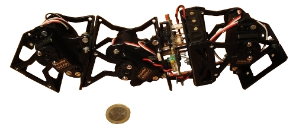

Hemos presentado una propuesta para impartir el I taller de Robots ápodos Modulares en la Universidad Carlos III, en colaboración con la Asociación de Robótica de la Carlos III.
Es UNA PROPUESTA. Todavía NO nos la han concedido. Hasta dentro de un mes no sabremos nada.
Si fuera aceptada, los detalles del taller serían:
Lo más interesante sucederá el último día. Usando los módulos de cada grupo, se construirá de manera colaborativa un robot serpiente/gusano de 2.6 metros de longitud y 30 módulos. Se exhibirá en una demostración pública, para que todo el mundo la pueda ver, tocar y sacarse fotos.
Para mí el gran reto es: ¿Se moverá esta serpiente? Las simulaciones dicen que sí, pero … ¿Qué ocurrirá en la realidad? Estoy deseando probarlo 🙂
La propuesta la podéis ver aquí: ( Propuesta en PDF) ( Propuesta para Openoffice)
Seguro que te lo van a Aceptar y segurisimo que vas a tener alli mogollon de prensa!!! no se por que me huelo que vas estar en unos cuantos telediarios!!!
Sois unos maquinas!
Gracias Mif!!! 🙂